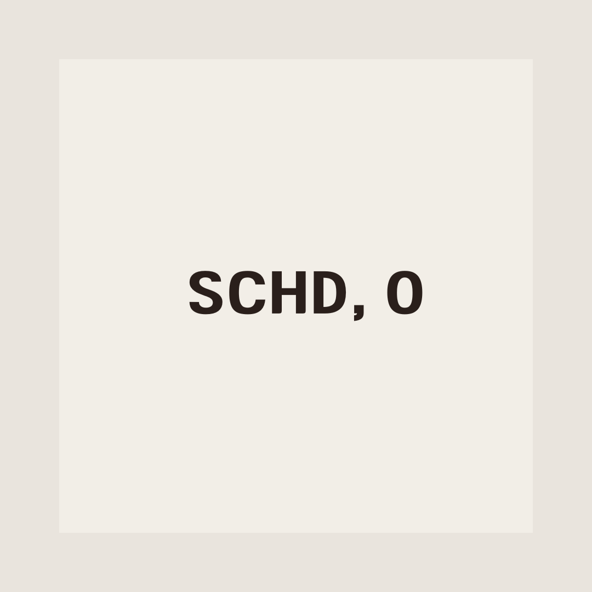

배당 투자는 안정적인 수익 창출을 목표로 하는 투자 전략입니다. 하지만 이 2개의 주식은 성장주 못지 않은 성장률도 보이고 있어서 많은 분들이 들어보셨을 것이라 생각이 듭니다. 배당 투자의 대표적인 종목들 중 하나인 SCHD와 리얼티 인컴(O) 주식에 대해 소개하고, 이들의 장점과 단점을 분석해보겠습니다.
1. SCHD: 미국 대형 배당주 지수 ETF
SCHD(Schwab U.S. Dividend Equity ETF)는 미국의 대형 배당주를 추적하는 지수 펀드로, 안정적인 배당 수익을 추구합니다. 다양한 업종의 선별된 대형 배당주를 포함하며, 운용비가 낮은 것이 특징입니다.
장점- 다양한 업종의 주식을 포함하여 포트폴리오의 다양화를 도모함으로써 위험 분산이 가능하다.
- 운용비가 낮아 투자자들의 실질적인 수익률이 높다.
- 대형 기업들의 안정적인 배당 성향으로 장기적인 배당 수익이 기대된다.
- 일반적으로 주식 시장의 변동성보다 낮은 변동성을 보이며, 안정적인 투자를 추구한다.
- 지수 펀드이기 때문에 개별 종목의 투자 기회를 직접 선별할 수 없다.
- 급격한 경기 변화나 개별 기업의 이슈에 따른 민감도가 높을 수 있다.
- 시장 평균 수익률을 추구하기 때문에, 특정 기업의 성장성을 활용한 초과수익을 기대하기 어렵다.
2. 리얼티 인컴(O)
리얼티 인컴(O)은 미국의 대형 부동산 투자 신탁(리츠)으로, 주로 상업용 부동산을 운영하며 안정적인 배당을 지급합니다. 일정한 현금 흐름을 제공하는 것이 특징이며, 매월 배당을 지급하고 있습니다.
장점- 고정된 부동산 자산을 기반으로 하는 투자로, 장기적인 가치 상승을 기대할 수 있다.
- 리츠로서, 회사의 수익 중 일정 비율 이상을 배당으로 돌려주어야 하므로, 배당 수익률이 상대적으로 높다.
- 부동산 시장의 변동성에 영향을 받을 수 있어, 일부 상황에서는 주가가 불안정할 수 있다.
- 금리 상승에 따른 부동산 시장의 악영향을 받을 수 있다.
- 경기 둔화나 건설비용 상승 등에 따른 이익 감소 위험이 존재한다.
- 개별 리츠이기 때문에 포트폴리오의 다양화가 덜 되어 있어, 개별 기업의 위험에 노출될 수 있다.
결론
SCHD와 리얼티 인컴(O)은 각각 다양한 업종의 대형 배당주와 부동산 시장을 대표하는 배당 투자 옵션입니다. SCHD는 다양한 업종의 대형 배당주를 포함한 지수 펀드로, 포트폴리오 다양화와 낮은 운용비로 인한 안정적인 배당 수익을 기대할 수 있습니다. 반면, 리얼티 인컴(O)는 상업용 부동산을 운영하는 REIT로서, 매월 배당을 지급하며, 상대적으로 높은 배당 수익률을 제공합니다. 두 종목 모두 장기적인 배당 투자에 적합하나, 투자자의 개인적인 투자 목표와 리스크 허용도에 따라 선택이 달라질 수 있습니다. SCHD는 다양한 업종의 대형 배당주를 추구하는 투자자에게 적합하며, 리얼티 인컴(O)는 부동산 시장에 집중적으로 투자하고자 하는 투자자에게 적합합니다. 이 두 종목의 장단점을 고려하여, 본인의 투자 철학과 목표에 맞는 배당 투자를 결정하는 것이 중요합니다.